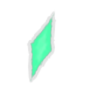
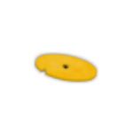
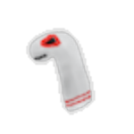
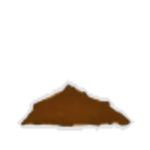
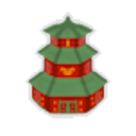
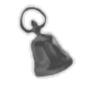

| Name | Image | Tier | Pool | Description | Flavor |
|---|
| Placebo |  | Common | | Things will go better. | I swear, it really changes things. |
| Amulet Fragment |  | Uncommon | | Whenever you remove a card from your deck, raise your Max HP by 5. | This tiny shattered fragment still glows with a faint light. |
| Blessed Leaf | | Uncommon | | At the start of combat, deal 2 damage to a random enemy for each Attack in your deck. | A leaf of the sacred Lun Tree. |
| Counterfeit Coin |  | Uncommon | | At the start of combat, shuffle a copy of all your Rare cards into your draw pile. | Don't get it mixed up with the real thing. |
| Sock Puppet |  | Uncommon | | Whenever you draw an Unplayable card, gain 4Block. | His name is Lord Ultraviolence the Second. |
| Scissors | | Rare | | Your Attack cards deal additional damage equal to the number of other Attack cards in your hand. | What a strange design for a weapon. |
| Triangle | | Rare | | The first Attack,Skill, and Power card you play each combat cost 0. | The most nuanced of instruments. |
| Dirt |  | Boss | | Your starter cards cost no [E] . | Dirt |
| Dreaming Stone |  | Boss | | Every 3 turns, use the top 10 cards of your draw pile as your hand. | Keep it under your pillow, and you might finally remember your dreams. |
| Miniature Pagoda |  | Boss | | Gain [E] at the start of your turn. You cannot draw more than 9 cards each turn. | Nine is the limit; to go higher is defiance. |
| Sending Bell |  | Boss | | Combats drop an additional Curse card reward. Whenever you obtain a Curse, obtain a random relic. | Ring it thrice, in memory of those you have seen away. |
| Voice Box |  | Boss | | Your cards are played in pairs. The second card will use the first card's damage and Block. | It records and repeats and records and repeats the sounds around the sounds around it. |
| Owl Charm |  | Shop | | Whenever you draw a Power card, transform it into a random card and reduce its cost to 0 for the combat. | A sigil of those seeking a different form of power. |